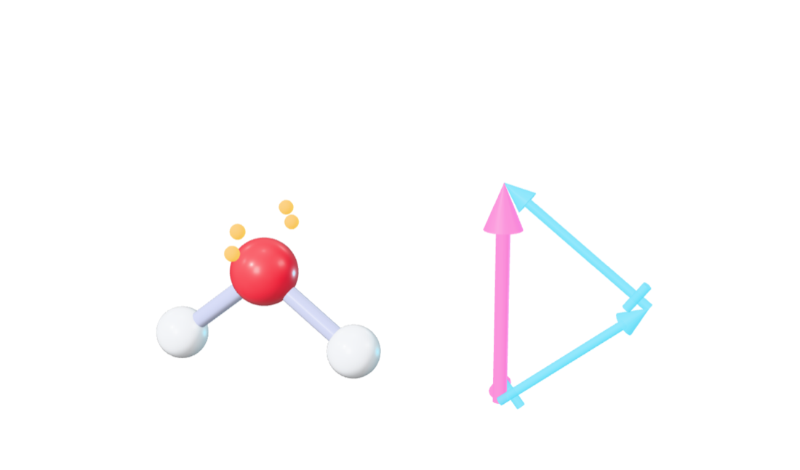

One question at a time with a big 3D picture, and a plain-English “why” the moment you answer. No scores, points, streaks, or percentages anywhere. Missed cards still quietly come back in later rounds (the existing logic and saved data stay as they are).
Desktop · after answering

Illustrative Drag to rotateH₂O (water): the arrows show its bond dipoles. Is the molecule polar or nonpolar?
Phone
H₂O (water): the arrows show its bond dipoles. Is the molecule polar or nonpolar?
Look at the model, then pick an answer.
H₂O (water): the arrows show its bond dipoles. Is the molecule polar or nonpolar?
Start and finish screens
Pick what you want to practice. Ten cards, each with something to look at.
General Chem
Organic
Biochem
2 cards you missed before will come back in this round.
✓ Round finished
3 cards will come back another time, so they stick. These lessons cover them:
“Card 3 of 10” only tells you how far along you are; it isn’t a score. The finish screen names what will come back and where to review it, with no numbers of right or wrong.